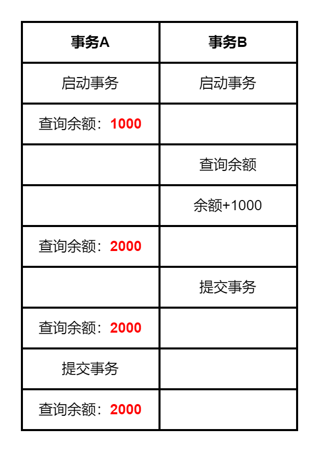
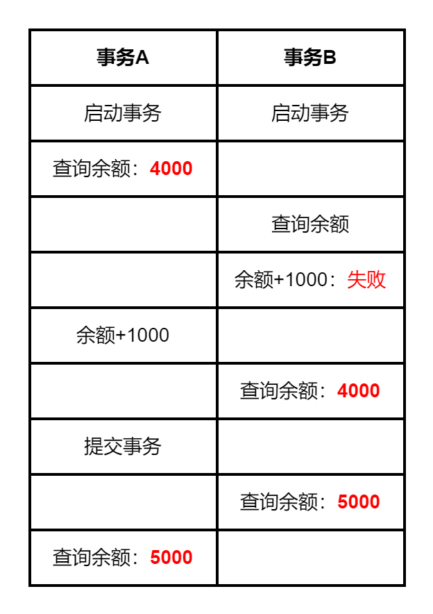
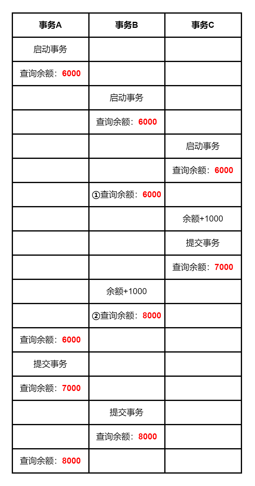
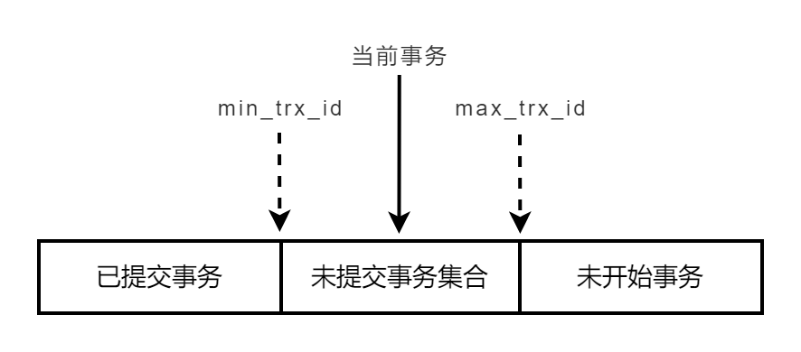
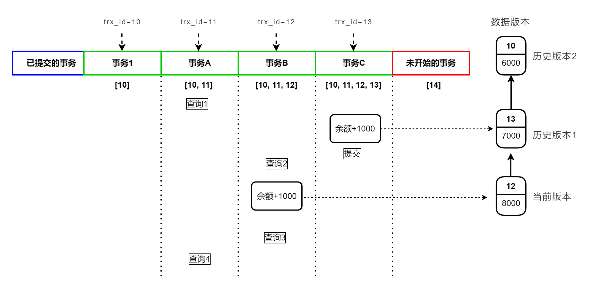

对数据进行并发操作时，事务可以确保数据的完整性，在银行、证券交易等业务场景需要用到它，本文将介绍MySQL事务是如何保证数据的一致性的。
事务是指逻辑上的一组操作（insert，delete，update）中的各个单元要么全部成功，要么全部失败。也就是说，事务是一个最小的工作单元，不可再分。
事务特性
只有对数据库表的增（insert）、删（delete）、改（update）与事务有关，事务具有四个特性：
- Atomicity，原子性。事务是最小的工作单元，不可再分。
- Consistency，一致性。事务必须使数据库从一个一致性状态变换到另外一个一致性状态。
- Isolation，隔离性。多个事务之间要相互隔离。
- Durability，持久性。一个事务一旦被提交，它对数据库中数据的改变就是永久性的。
MySQL 原生的 MyISAM 引擎不支持事务， InnoDB是支持事务的，InnoDB引擎的undo log(回滚日志)是其实现事务的基础。相关介绍可参考 MySQL日志系统：binlog、redo log和undo log。
使用InnoDB引擎的MySQL服务默认是开启自动提交的：
1 | mysql> show variables like '%autocommit%'; |
mysql默认会将用户的操作当做事务即时提交，下面来举例说明事务的执行过程。
事务启动与提交
创建表并插入数据：1
2
3
4
5
6
7create table department(
id int not null auto_increment primary key COMMENT 'ID',
name char(4) not null COMMENT '名称') ENGINE=InnoDB
DEFAULT CHARSET=utf8
comment = '部门';
insert into department (name) values ('开发');
数据表数据如下：1
2
3
4
5
6
7mysql> select * from department;
+----+------+
| id | name |
+----+------+
| 1 | 开发 |
+----+------+
1 row in set (0.00 sec)
客户端A显式地开启一个事务，插入数据：
1 | mysql> start transaction; |
客户端B查询：
1 | mysql> select * from department; |
客户端B没有查询到A插入的数据，因为A没有提交，还没有完成一个事务。（注：当前使用的隔离级别为可重复读）
接下来提交A的事务：
1 | mysql> commit; |
客户端B再来查询：
1 | mysql> select * from department; |
这时就可以查询到A插入的数据了。
事务回滚
启动事务，使用savepoint保存节点：
1 | mysql> start transaction; |
如果事务执行过程中突然崩溃，mysql会回滚到事务执行前的状态。这里使用rollback来手动回滚：
1 | mysql> rollback to sp2; |
再次执行一个插入事务：
1 | mysql> insert into department (name) values ('测试'); |
可以看到回滚执行了删除（delete）的操作。
什么是事务隔离
前面举例说明了单个事务的执行过程 ，真实业务中往往是多个事务同时执行，MySQL有多种事务隔离级别，隔离越彻底，效率可能会越低，所以需要根据自己的业务情况来选择合适的隔离方法。
事务隔离级别
MySQL数据库定义了四种事务隔离级别：
1、读未提交（read uncommitted）：事务还未提交，它做的变更就可以被其它事务读到。
- 最低的隔离级别。
- 这种隔离级别会导致脏读(Dirty Read)现象，事务A读取到了事务B未提交的数据。
2、读提交（read committed）：事务提交之后，它做的变更才会被其他事务读到。
- 可避免脏读现象发生。
- 会导致不可重复读现象：指在一个事务内读取表中的某一行数据，多次读取结果不同，重新读取了前一事务已提交的数据。
- 是oracle数据库的默认隔离级别。
3、可重复读（repeatable read），事务读取到的数据，永远是此事务启动时读到的数据。也就是说，事务B修改了数据并且提交了，事务A读取到的数据还是不变。
- 可避免脏读、不可重复读情况的发生。
- 会出现虚读（幻读），每次读取到的数据是假象，不够真实。
- MySQL的默认事务隔离级别。
4、串行化（serializable ），事务串行执行，不能多事务并发执行。
- 最高的隔离级别，解决前面提到的所有问题，当然效率也是最低的。
查询MySQL数据库隔离级别：
1 | mysql> show variables like 'transaction_isolation'; |
事务隔离实例
以转账为例来举例说明这4中隔离级别，先创建account表：
1 | create table account( |
读未提交
设置数据库隔离级别为读未提交：
1 | SET SESSION TRANSACTION ISOLATION LEVEL READ UNCOMMITTED; |
1、A窗口查询
1 | mysql> start transaction; |
2、B窗口给zhangsan转钱，不提交
1 | mysql> start transaction; |
3、A窗口查询
1 | mysql> select * from account; |
可以发现A窗口读到了B未提交的数据，这就是脏读。

读提交
设置数据库隔离级别为读提交：
1 | SET SESSION TRANSACTION ISOLATION LEVEL READ COMMITTED; |
1、A窗口查询
1 | mysql> start transaction; |
2、B窗口给zhangsan转钱，不提交
1 | mysql> start transaction; |
3、A窗口查询
1 | mysql> select * from account; |
4、B窗口提交事务
1 | mysql> commit; |
5、A窗口查询
1 | mysql> select * from account; |
事务 B 的更新在提交后才能被 A 看到，这是不可重复读，两次读取帐户的余额不同。
可重复读
设置数据库隔离级别为可重复读：
1 | SET SESSION TRANSACTION ISOLATION LEVEL REPEATABLE READ; |
1、A窗口查询
1 | mysql> start transaction; |
2、B窗口给zhangsan转钱，不提交
1 | mysql> start transaction; |
3、A窗口查询
1 | mysql> select * from account; |
4、B窗口提交事务
1 | mysql> commit; |
5、A窗口查询
1 | mysql> select * from account; |
6、A窗口提交事务并查询
1 | mysql> commit; |
事务 A 执行过程中看到的数据是一样的，事务B增加了余额并且提交了，事务A读取到的余额还是不变，出现虚读（幻读）。
串行化
设置数据库隔离级别为串行化：
1 | SET SESSION TRANSACTION ISOLATION LEVEL SERIALIZABLE; |
1、A窗口查询
1 | mysql> start transaction; |
2、B窗口给zhangsan转钱
1 | mysql> start transaction; |
发现B窗口无法转账成功，因为A事务没有提交，不能并行执行事务，无法更新。
这里锁的等待时间默认为50s：
2
3
4
5
6
7
+--------------------------+-------+
| Variable_name | Value |
+--------------------------+-------+
| innodb_lock_wait_timeout | 50 |
+--------------------------+-------+
1 row in set, 1 warning (0.00 sec)可以设置为其它值：
串行化隔离级别使用的是共享锁，事务A启动后对数据加了共享锁，事务B不能修改数据，但可以查询：
1 | mysql> select * from account; |
3、A窗口给zhangsan转钱
1 | mysql> update account set balance=balance+1000 where name='zhangsan'; |
4、B窗口查询
1 | mysql> select * from account; |
5、A窗口提交事务
1 | mysql> commit; |
6、B窗口查询
1 | mysql> select * from account; |

事务隔离实现方式
在 MySQL日志系统：binlog、redo log和undo log 中简单介绍了InnoDB的多版本并发控制 (multi-version concurrency control，MVCC) 是基于undo log来实现的，保证了事务的隔离性。
InnoDB 引擎的读提交和可重复读隔离级别是使用 MVCC技术中的一致性读视图(consistent read view)来实现的。注意：这里提到的视图和查询语句定义的视图不是一个概念。
在可重复读隔离级别下，在事务启动时数据库会创建一个视图，在这个事务的整个存在期间都用这个视图。其它事务对同一数据进行操作时，不会影响当前视图。也就是说，在可重复读隔离级别下，事务读取到的数据永远是此事务启动时读到的数据；
读提交隔离级别也使用的是一致性读视图，这个视图会在每个 SQL 语句开始执行的时候创建；
读未提交隔离级别没有视图概念，直接返回记录上的最新值；
串行化隔离级别通过用加锁（共享锁）的方式来实现串行执行，避免并发访问。
MVCC一致性视图
MVCC 通过对数据行创建多个数据版本来实现对数据库的并发控制，实现不加锁也可以进行并发读，达到事务隔离的效果。先来看一个例子（隔离级别为可重复读）：
1、A窗口查询
1 | mysql> start transaction; |
2、B窗口查询
1 | mysql> start transaction; |
3、C窗口给zhangsan转钱，提交
1 | mysql> update account set balance=balance+1000 where name='zhangsan'; |
4、B窗口给zhangsan转钱，不提交
1 | mysql> update account set balance=balance+1000 where name='zhangsan'; |
5、A窗口查询
1 | mysql> select * from account; |
6、A窗口提交
1 | mysql> commit; |
7、B窗口提交
1 | mysql> commit; |
8、A窗口查询
1 | mysql> select * from account; |
执行流程图如下：

A事务中，事务C修改了余额，A查询到的余额还是6000，这是MVCC的一致性视图（read view）实现的。
B事务中，位置①查询到余额为6000，而位置②查询到的余额为8000。是因为事务B在更新数据时使用了当前读，这避免了幻读。下面介绍它们的工作原理。
事务启动时会生成一个库的快照，事务获得一个唯一的事务 ID(transaction id)，事务更新数据时，会生成一个新的数据版本，并且把事务 ID赋值给这个数据版本的事务 ID，记为 row trx_id。
事务 ID是事务启动时向事务系统申请的，也就是在执行第一个操作表的语句时申请：
2
select * from accrount;或者执行以下语句，系统会立刻启动一个事务：
也就是说，多个事务更新数据表中的某一行记录时，会产生多个版本，每个版本的 row trx_id不同。对某个事务来说，它启动时能够看到所有已经提交的事务结果，之后这个事务执行期间，它不能看到其他事务的更新。
当前事务在启动的瞬间，InnoDB会构造一个事务数组 ，保存启动了但还没提交的事务 ID，最小事务id记为min_trx_id，当前系统已经创建过的最大事务 ID 加 1 记为max_trx_id，是系统应该分配给下一个事务的事务ID。min_trx_id和max_trx_id就构成了当前事务的一致性视图（Read-View）。

读提交和可重复读隔离级别都使用了MVCC的一致性视图，区别在于他们生成Read-View的时机不同。
可重复读是在事务启动时创建视图，之后这个事务的其他查询都用这个视图，所以它从头到尾看到的数据是一样的。
而读提交是在每个 SQL 语句开始执行前都会创建一个新的视图；
下面来分析一下上面的例子中事务A的执行流程：

事务A在查询4时，发现①当前版本为12，而事务A的视图数组为[10, 11]，事务A判断12比11大，所以不可见；②接着查找上一个历史版本，发现13还是比11大，不可见；③继续查找上一个版本，row trx_id为10，比11小，是可见的。这一行数据虽然被其它事务修改，但事务A每次查询的结果都是一致的，这就是一致性读。
如果是读提交隔离级别，查询4读到的余额就是7000，因为事务C查询前会创建一个新的视图，事务B没有提交，不可见，而事务C提交了，所以是可见的。
当前读
上面介绍的MVCC一致性视图使用的是快照读，是一种不加锁的非阻塞读；
当前读读取的是记录的最新版本，并对读取的当前记录加锁（Next-Key Lock），保证其他并发事务不能修改这条记录，避免了幻读问题。由于需要对当前记录加锁，会阻塞其他事务的写操作，所以它是一种阻塞读。
下面的SQL语句会使用当前读：
1 | select * from account lock in share mode; # 添加读锁（S 锁，共享锁） |
下面来分析一下前面例子中事务B的执行流程：
事务B在查询2时，使用的是快照读，读取到的余额为6000。但当它更新数据时，就不能在数据版本10上更新了，否则会导致事务C的更新丢失。所以事务B使用的是当前读，读取当前最新的数据版本13，更新后余额变为8000。
在事务B查询时（查询3），自己的版本是 12，最新的数据版本也是 12，是可见的，所以查询到余额为8000。
如果事务C更新余额后没有马上提交，事务B更新时会进行锁等待，直到事务C释放这个锁后事务B才会进行当前读。
小结
本文介绍了MySQL事务隔离性涉及到的一些技术，简单做一个小结。
MySQL InnoDB引擎支持事务，undo log(回滚日志)是实现事务的基础。MVCC通过给行数据生成多个版本，每个数据版本有唯一的 row trx_id，每个事务的一致性视图达到了事务隔离的效果。
读提交和可重复度隔离级别都使用了MVCC的一致性视图，区别在于他们生成Read-View的时机不同。可重复读是在事务启动时创建视图，而读提交是在每个 SQL 语句开始执行前都会创建一个新的视图；
当前读读取的是当前已经提交的最新版本，需对当前记录加锁，是一种阻塞读。
他们只要拒绝相信就行。面对难题，最容易的对策就是拒绝相信它的存在。——艾萨克·阿西莫夫《神们自己》
本文标题:MySQL事务：事务隔离
文章作者:hiyo
文章链接:https://hiyongz.github.io/posts/database-for-mysql-transaction-isolation/
许可协议:本博客文章除特别声明外，均采用CC BY-NC-ND 4.0 许可协议。转载请保留原文链接及作者。